O Brasil registrou 1.463 casos de mulheres que foram vítimas de feminicídio [...] [em 2023] – ou
seja, cerca de 1 caso a cada 6 horas. Esse é o maior número registrado desde que a lei contra
feminicídio foi criada, em 2015.
O número também é 1,6% maior que o de 2022, segundo o relatório publicado pelo Fórum
Brasileiro de Segurança Pública (FBSP) [...] [em março de 2024]. A pesquisa apontou que 18 estados
apresentaram uma taxa de feminicídio acima da média nacional, de 1,4 mortes para cada 100 mil
mulheres.
O estado com a maior taxa [...] [em 2023] foi Mato Grosso, com 2,5 mulheres mortas por 100 mil.
Empatados em segundo lugar, os estados mais violentos para mulheres foram Acre, Rondônia e
Tocantins, com taxa de 2,4 mortes por 100 mil. Na terceira posição aparece o Distrito Federal, cuja
taxa foi de 2,3 por 100 mil mulheres [...] [em 2023].
Já as menores taxas de feminicídio foram registradas nos estados do Ceará (0,9 por 100 mil), São
Paulo (1,0 por 100 mil) e Amapá (1,1 por 100 mil).
Porém, a pesquisa destaca que no Ceará é preciso fazer uma ressalva. “Desde a tipificação da lei
[em 2015], a Polícia Civil do Ceará tem reconhecido um número muito baixo de feminicídios quando
comparado com o total de homicídios de mulheres ocorridos no estado, o que nos leva a crer que
estamos diante de uma expressiva subnotificação”, apontou o Fórum.
Em 2022, por exemplo, de um total de 264 mulheres assassinadas no estado, apenas 28 casos
receberam a tipificação de feminicídio – o número é 10,6% do total de assassinatos.
Desde que a lei contra feminicídio foi criada, quase 10,7 mil mulheres foram vítimas do crime no
país. A pesquisa não possui bases anteriores porque não havia uma legislação sobre o assunto.
NICOCELI, A. Brasil registra 1.463 feminicídios em 2023, alta de 1,6% em relação a 2022. G1, [s. l.],
7 mar. 2024. Disponível em: https://g1.globo.com/politica/noticia/2024/03/07/
brasil-feminicidios-em-2023.ghtml. Acesso em: 1o
out. 2024.
O feminicídio foi classificado como um crime hediondo no Brasil em março de 2015. Um
crime é considerado hediondo quando o delito em questão causa repulsa. A Lei do Feminicídio
(no
13.104/2015) aumentou a pena de 12 para até 30 anos de prisão para os assassinos.
Em 2016, a exposição “Nunca
me calarei”, de Márcio Freitas,
tomou conta da praia de
Copacabana, no Rio de Janeiro.
Além dos 20 painéis, que
representam diferentes vítimas
da violência contra a mulher,
foram espalhadas pela praia 420
calcinhas, em alusão ao número
de estupros sofridos por
mulheres a cada 72h, no Brasil,
segundo dados da época.
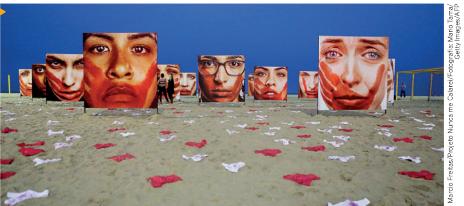
Registro da exposição “Nunca me
calarei”. Rio de Janeiro (RJ), 2016.
Sexo, gênero e poder
As relações entre homens e mulheres são marcadas por tensões, preconceitos, discriminações e dinâmicas de poder. Este capítulo desenvolve uma reflexão sociológica sobre essas relações considerando as formas que elas assumem no mundo atual.
Para nos aproximarmos e compreendermos de forma científica, e com profundidade, a temática deste capítulo, precisamos, em primeiro lugar, definir três termos: sexo biológico, gênero e identidade de gênero.
O sexo biológico pode ser definido como o conjunto das características fisiológicas e biológicas de uma pessoa ou organismo (órgão genital, hormônios, genes, sistema nervoso e morfologia).
O gênero tem relação com a cultura e as formas por meio das quais cada uma elabora e transmite os papéis sociais, como o “ser homem” e o “ser mulher”.
A identidade de gênero, por sua vez, diz respeito à identificação de gênero, pessoal e interna, que a pessoa tem de si mesma.
Geralmente a identificação de gênero é influenciada por convenções, estereótipos e expectativas construídas na socialização das pessoas. Mas existem casos em que essa adaptação não atende aos padrões e expectativas estabelecidos. Estudiosas do tema têm argumentado que a influência do gênero em nossa socialização não é absoluta. A ideia é a de que os sujeitos se apropriam e atualizam os elementos culturais e as representações que servem à construção de sua própria identidade. De acordo com essa posição, é importante compreender que as identidades de gênero não estão preestabelecidas, não são como roupas que vestimos, nem são fixas e imutáveis.
Uma das estudiosas da temática de gênero, a socióloga estadunidense Deborah Blum (1954-), afirma que os sentimentos, as atitudes e os comportamentos dos seres humanos podem condicionar as orientações pelo masculino ou pelo feminino. É nesse sentido que podemos falar sobre gênero.
De acordo com Joan Scott (1941-), outra socióloga estadunidense e considerada uma das maiores especialistas no assunto, gênero é um termo importado da gramática pelas feministas estadunidenses, nos anos 1960, exatamente com o objetivo de se contrapor às definições presas à Biologia. Nesse contexto, a ideia de gênero passou a significar as relações de caráter cultural que estão sempre presentes – mesmo sem percebermos – nas definições e nas distinções sobre o que é “masculino” ou “feminino”.
O comportamento, com gestos ou atitudes femininos e masculinos, conforme as expectativas de outros indivíduos, diz respeito a um papel de gênero. O gênero é a construção social que demarca identidades, com elaborações baseadas no contexto histórico e social, e não decorrentes simplesmente da diferença anatômica dos corpos. A constituição biológica não deve tornar, portanto, indiscutível a divisão dos humanos em dois blocos distintos (homens e mulheres).
Denominamos visão binária (dividida em dois) essa visão de dois gêneros distintos, e ela própria é objeto da investigação científica de áreas como Sociologia e Antropologia. Porque é uma contradição nós afirmarmos que gênero é uma elaboração social e apontarmos exclusivamente duas únicas identidades de gênero, masculino e feminino, como identidades possíveis.
O estabelecimento do poder pátrio, instituído pelo Código Romano no século VIII a.C., que influenciou a produção jurídica das leis ocidentais, foi responsável por instituir uma distinção hierárquica entre o masculino e o feminino. Com o poder pátrio e a instauração da sociedade patriarcal, o homem tornou-se proprietário de sua mulher e esta foi colocada sob sua tutela, desprovida de capacidade jurídica. Sua única função era reproduzir, gerando herdeiros, e cuidar do lar.
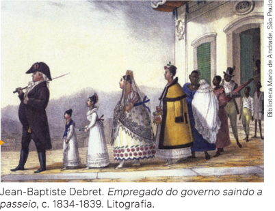
De acordo com a filósofa Judith Butler (1956-), foi produzida e estruturada de forma arbitrária uma oposição binária entre o masculino e o feminino, um pensamento dicotômico e polarizado sobre os gêneros: homem e mulher como polos opostos dentro de uma lógica invariável de dominação-subordinação. As relações de gênero são estabelecidas como relações de poder por causa da ideia de inferioridade feminina construída ao longo da história. Essas oposições foram elaboradas por meio das instituições de controle, tais como a religião, o Estado, a Justiça, a escola, que formaram e idealizaram hierarquias fixas e imutáveis entre os gêneros. Portanto, falar de gêneros (no plural) também é falar de dominação.
Na obra de Debret, que retrata uma família brasileira no período
imperial, podemos observar uma hierarquia entre as personagens
representadas, com destaque para o homem branco, à frente da fila
e em posição de superioridade, simbolizando as relações de poder
existentes na sociedade, reproduzidas nos espaços domésticos.
Movimentos feministas ao longo da história
Historicamente, o capitalismo apresenta um grande conflito: a luta entre as classes sociais. Entretanto, a História apresenta outros conflitos de interesses distintos da divisão da sociedade em classes e que percorrem toda a estrutura social, relacionados ou não à divisão de classes da sociedade capitalista. Por exemplo, conflitos entre homens e mulheres, entre heterossexuais e homossexuais e entre brancos e não brancos e/ou grupos étnicos diferentes. As mulheres, a partir do século XIX, passaram a demonstrar sua revolta à “dominação masculina” de forma coletiva.
Foram os movimentos feministas que iniciaram uma grande mudança nas ideias que preconizavam existir uma diferença natural entre o feminino e o masculino e, com isso, uma predisposição natural para os comportamentos e para as relações sociais baseadas nos papéis atribuídos a cada sexo. A visão do domínio masculino quer nos fazer crer que, segundo uma predisposição biológica, da mulher e do homem, de forma universal, elas são dóceis, e eles, agressivos; elas centram suas vidas nos cuidados com os filhos, e eles, em prover a sobrevivência material da família. Essas características foram bastante reforçadas por uma teoria sociológica do século XX denominada Sociobiologia. Esta afirma que a estrutura dos genes e do cérebro humano explicaria também os comportamentos e práticas sociais, e não somente as características físicas. Mas a influência dos movimentos feministas contribuiu para mudanças nessa forma de pensar, com o auxílio teórico de novas reflexões elaboradas pela Sociologia e pela Filosofia.
O papel das mulheres nas sociedades modernas é discutido desde pelo menos a Revolução Francesa. Entre as dezenas de participações políticas femininas durante a Revolução, se destacou Marie Gouze, que adotou o nome Olympe de Gouges (1748-1793). Como resposta ao conteúdo universalista presente na Declaração dos Direitos do Homem e do Cidadão, que excluía as mulheres desses direitos, Olympe de Gouges escreveu e apresentou à Assembleia Nacional, em 1791, a Declaração dos Direitos da Mulher e da Cidadã. De origem proletária, mas opositora de Robespierre, ela acabou guilhotinada em 1793, acusada de ser “contrarrevolucionária” e de mulher “desnaturada”.
Veja, a título de exemplo, dois artigos da Declaração elaborada por Gouges:
ARTIGO PRIMEIRO: A mulher nasce livre e mantém-se igual ao homem em direitos. As distinções sociais só podem fundamentar-se na utilidade comum.
VI: A lei deve ser a expressão do desejo geral; todas as cidadãs e cidadãos devem participar, pessoalmente, ou por meio de seus representantes, de sua formação; ela deve ser a mesma para todos; todas as cidadãs e cidadãos, sendo iguais perante a lei, devem ser igualmente admitidos a todas as dignidades, cargos ou empregos públicos, segundo suas habilidades e sem outras distinções senão as de suas virtudes e de seus talentos.
GOUGES, O. de. Declaração dos direitos da mulher e da cidadã e outros textos. Tradução de Cristian Brayner. Brasília: Câmara dos
Deputados/Edições Câmara, 2021. p. 41-43.
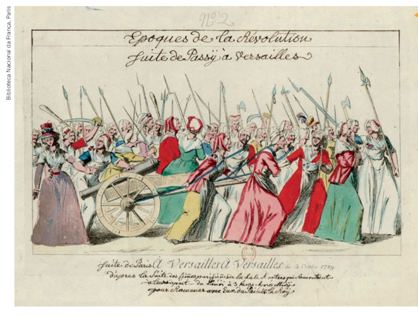
Marcha das Mulheres sobre
Versalhes, 1789. Gravura.
Em 5 de outubro de 1789,
mulheres que trabalhavam
nos mercados de Paris
iniciaram protestos e
marcharam até a cidade
de Versalhes contra a
escassez de alimentos,
especialmente de pão, e a
alta dos preços. Uniram-se
também às manifestações
contra a autoridade do rei
e por reformas políticas,
já no contexto do início da
Revolução Francesa.
A primeira onda feminista
Apesar de Olympe de Gouges e de outras mulheres revolucionárias, parte da história do feminismo considera o surgimento de uma primeira onda do movimento somente nas últimas décadas do século XIX. Nesse período, a primeira bandeira de luta das mulheres se deu em torno da reivindicação do direito ao voto. Esse movimento pioneiro teve início na Inglaterra. Lá, as chamadas suffragettes promoveram grandes manifestações, sendo reprimidas e presas diversas vezes. Diante do aparato repressor, reagiam organizando greves de fome. O movimento acabou sendo vitorioso em 1918, com a conquista do direito ao voto no Reino Unido. Fato relevante nesse contexto foi a morte da militante Emily Davison (1872-1913) após ser atingida pelo cavalo do Rei Jorge V (1865-1936) em um tradicional evento de corrida de cavalos.
Segundo a historiadora e cientista política Céli Regina Jardim Pinto, no Brasil foi na luta pelo voto que a primeira onda do feminismo também se manifestou publicamente.
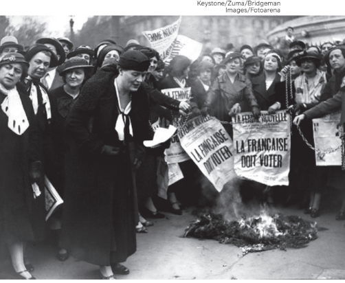
Na metade do século XX, o debate sobre a condição das mulheres e sobre a relação entre os sexos ganha um novo impulso. Em 1949, veio à público o livro O segundo sexo, de Simone de Beauvoir (1908-1986).
Entre as sufragistas brasileiras, destaca-se a cientista e bióloga Bertha Lutz (1894-1976), uma das fundadoras da Federação Brasileira pelo Progresso Feminino. Ela estudou na França, retornando ao país no final da década de 1910. O movimento liderado por ela organizou uma campanha pública e um abaixo-assinado, apresentado ao Senado em 1927, pedindo a aprovação do projeto de lei que dava às mulheres o direito de voto. Esse direito, quando conquistado em 1932, foi promulgado no Novo Código Eleitoral brasileiro.
Simone de Beauvoir procurou mostrar que o termo feminilidade foi inventado pelos homens com intenção de limitar o papel social das mulheres. O poder que esse conceito exerceu e exerce é possível pelo fato de que uma palavra não é somente uma representação de fonemas, mas carrega consigo valores, modos de pensar e visões de mundo. A filósofa questionava a ideia de que as mulheres são inferiores e também questionava a sua posição de subordinação. Para Beauvoir, as mulheres tinham de superar o eterno feminino, que as amarrava e formava seu próprio ser. Além disso, elas deveriam escolher seu próprio destino, libertando-se das ideias preconcebidas e dos mitos preestabelecidos sobre o seu ser.
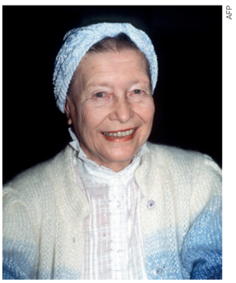
A palavra eterno supõe algo universal, natural e imutável. Essa crença na ideia de eterno feminino condicionou a mulher a aceitar resignada, e sem discussão, as verdades e as leis que os homens lhe propunham. Nas análises elaboradas por Beauvoir, a mulher foi condicionada a ser sempre o Outro, o Objeto, perante o homem, Sujeito e Absoluto. Isso fez com que os dois sexos não partilhassem o mundo em igualdade de condições.
Contrariamente a isso, Beauvoir afirmou: “não se nasce mulher, torna-se mulher”. A filósofa era contra qualquer tipo de determinismo que aprisionasse a mulher na condição de inferioridade em relação ao homem. Definir a mulher unicamente em virtude da sua estrutura fisiológica e pela sua condição natural seria uma forma simplista e equivocada, pois a mulher não é somente um corpo com útero, vagina, óvulos, hormônios. A mulher deve escolher afirmar e reivindicar sua liberdade e não se alienar como objeto, não ficar limitada a um papel biológico. Em vez disso, deve ter projetos pessoais, trabalhar, ter direito à remuneração equivalente à do homem e poder exercer as mesmas funções que ele. O que Simone de Beauvoir defendia é que a mulher é um ser em permanente construção que deve caminhar em direção à sua individualidade e autonomia.
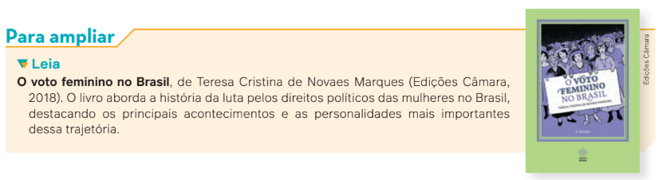
A segunda onda feminista
A partir da década de 1960, os movimentos feministas organizaram aquela que é considerada
a segunda onda do movimento. Com inspiração nos trabalhos de várias intelectuais, como
Simone de Beauvoir, Betty Friedan (1921-2006), Kate Millet (1934-2017), Shulamith Firestone
(1945-2012), bell hooks (1952-2021) e Juliet Mitchell (1940-), nesse período se aprofundaram
as lutas por direitos iguais perante os homens. Fazendo uma crítica à sociedade patriarcal,
ou seja, a um modelo de família e de sociedade que dá privilégios aos homens, as feministas
reivindicavam igualdade de condições de trabalho e salário, direito ao aborto e ao controle do
corpo, autonomia intelectual e punição aos homens pela violência doméstica e sexual, entre
outras questões. Pode-se dizer que outros fatores vinculados aos avanços da ciência, como é
o caso da invenção da pílula anticoncepcional, na década de 1950, desempenharam um papel
importante no processo de emancipação feminina.
Segundo Céli Pinto, foi no contexto de revolução comportamental que marcou essa década
que Betty Friedan lançou, em 1963, a obra que passou a ser considerada como uma espécie de
“bíblia” do novo feminismo: A mística feminina.
[...] Durante a década [de 1960], na Europa e nos Estados Unidos, o movimento
feminista surge com toda a força, e as mulheres pela primeira vez falam diretamente sobre
a questão das relações de poder entre homens e mulheres. O feminismo aparece como
um movimento libertário, que não quer só espaço para a mulher – no trabalho, na vida
pública, na educação –, mas que luta, sim, por uma nova forma de relacionamento entre
homens e mulheres, em que estas últimas tenham liberdade e autonomia para decidir
sobre suas vidas e seus corpos. Aponta, e isto é o que há de mais original no movimento,
que existe uma outra forma de dominação – além da clássica dominação de classe –, a
dominação do homem sobre a mulher – e que uma não pode ser representada pela outra,
já que cada uma tem suas características próprias.
PINTO, C. R. J. Feminismo, história e poder. Revista de Sociologia e Política,
Curitiba, v. 18, n. 36, p. 16, jun. 2010.
A revolução cultural vivida pelas mulheres na década de 1960 teve
repercussões também na sociedade brasileira. Foi intensa a participação
feminina na luta contra a Ditadura Civil-Militar instaurada em 1964, inclusive
com a opção de militância pela luta armada. Nomes como o de Maria
do Carmo Brito (1943-) – primeira mulher a comandar uma organização de
guerrilha na América Latina –, Sônia Lafoz (1946-), Vera Silvia Magalhães
(1948-2007), Lúcia Murat (1948-), Renata Guerra de Andrade, Dulce Maia
(1937-2017), entre outros, fizeram parte dos movimentos de resistência à
ditadura, como a Vanguarda Popular Revolucionária. É importante mencionar
também o nome de Zuzu Angel (1921-1976). Mesmo não tendo participado da luta
armada, a estilista foi morta enquanto buscava notícias de
seu filho, Stuart Jones, e sua nora, Sonia Maria, desaparecidos durante a
ditadura.
Um dos marcos teóricos da luta feminista brasileira nesse período foi o
trabalho da socióloga Heleieth Saffioti (1934-2010), A mulher na sociedade
de classes: mito e realidade, lançado em 1969. Essa obra foi apontada
como o primeiro grande avanço teórico do feminismo dos anos 1960-70
no mundo e é considerada uma sofisticada teorização das formas como o
sexo está presente na estratificação social.
A terceira onda feminista
Durante o processo de redemocratização da sociedade brasileira, uma das lideranças feministas de maior relevância foi a historiadora, filósofa e antropóloga Lélia Gonzalez (1935-1994). Sua intervenção acadêmica e sua militância feminista se pautaram por um caráter de denúncia sistemática não somente do machismo, mas também do racismo, em especial aquele que atinge e exclui de forma bastante violenta as mulheres negras e indígenas na sociedade brasileira. Lélia Gonzalez se contrapôs ao feminismo branco e elitista que se impunha como hegemônico em nosso país, destacando a necessidade de repensar as reivindicações das mulheres e a luta contra as opressões existentes tendo como ponto de partida as diferentes trajetórias vividas, demarcadas por sua classe social e pela cor da sua pele.
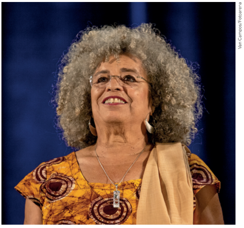
As críticas trazidas por algumas feministas dessa terceira onda [...] vêm no sentido de mostrar que o discurso universal é excludente; excludente porque as opressões atingem as mulheres de modos diferentes, seria necessário discutir gênero com recorte de classe e raça, levar em conta as especificidades das mulheres. Por exemplo, trabalhar fora sem a autorização do marido jamais foi uma reivindicação das mulheres negras/pobres, assim como a universalização da categoria “mulheres” tendo em vista a representação política, foi feita tendo como base a mulher branca, de classe média. Além disso, propõe, como era feito até então, a desconstrução das teorias feministas e representações que pensam a categoria de gênero de modo binário, masculino/feminino.
A militância de Lélia Gonzalez em torno do que ficou conhecido como o feminismo negro marcou a década de 1990 no Brasil. O feminismo negro já não era novidade nos Estados Unidos desde a década de 1960, em especial com a visibilidade alcançada pela ativista Angela Davis (1944-), que se notabilizou por se afirmar não somente como mulher negra, mas também como comunista, candidatando-se duas vezes à vice-presidência da maior potência capitalista do planeta. Mas as ideias levantadas por essa terceira onda tinham como principal referência as formulações da filósofa Judith Butler. Segundo a filósofa feminista Djamila Ribeiro (1980-):
RIBEIRO, D. As diversas ondas do feminismo acadêmico. Portal Geledés, [s. l.], 25 nov. 2014. Disponível em: https://www.geledes.org.br/diversas-ondas-feminismo-academico/. Acesso em: 1o out. 2024.
Trata-se, portanto, da desconstrução de paradigmas existentes no próprio movimento feminista, apresentando questões que se propunham a repensar as definições de gênero, de sexualidade e de identidade, até então inexistentes ou não problematizadas. Ainda segundo Djamila Ribeiro, a obra Problemas de gênero: feminismo e subversão da identidade (1990), de Judith Butler, se tornou a principal referência teórica do feminismo em sua terceira onda.
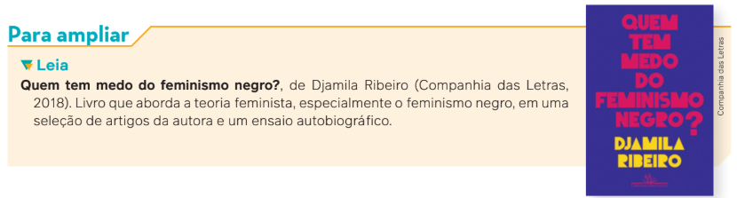
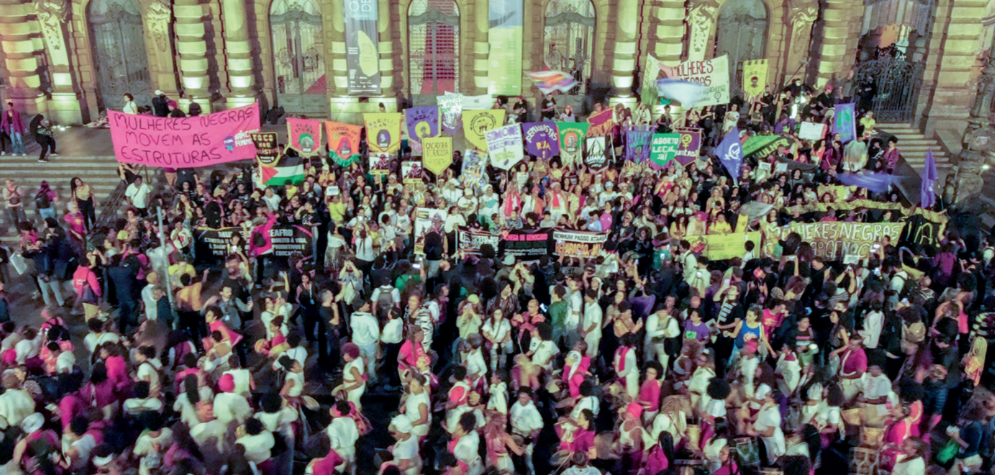
Marcha das
Mulheres Negras
realizada no dia
25 de julho, em
celebração ao
Dia Internacional
da Mulher Negra
Latino-Americana
e Caribenha. São
Paulo (SP), 2024.
Descolonizando o feminismo
É importante ressaltar que a divisão da história do feminismo em três ondas coloca as mulheres brancas de classe média como os agentes centrais da história da luta pelos direitos das mulheres, em uma análise em que mulheres não brancas se tornam agentes secundários, somente aceitos no decorrer da história. Durante a terceira onda, mulheres não brancas manifestam-se para transformar o feminismo em um movimento intercultural. Como escrito anteriormente, essa perspectiva histórica estabelece o início do movimento feminista com o movimento das sufragistas e está relacionada a um ponto de vista eurocêntrico que ignora iniciativas, organizações e associações de outras mulheres, de outros continentes e outras etnias.
A perspectiva feminista clássica, que tem o seu paradigma centrado na mulher branca ocidental, tendeu a apresentar as experiências desse grupo específico como sendo a experiência de todas as mulheres. O movimento feminista oficial não levou em consideração as sobreposições das desigualdades, como as de raça e classe social, que se combinam de um modo muito cruel na vida de algumas mulheres. O conceito que o feminismo negro construiu para dar nome a essas sobreposições foi o de interseccionalidade, conforme já estudamos anteriormente. Segundo a pesquisadora Carla Akotirene (1980-), as mulheres negras vivem em um sistema de opressão interligado. Nas palavras da escritora e ativista estadunidense Audre Lorde (1934-1992), o conceito de interseccionalidade pode ser evidenciado da seguinte forma:
Dentro da comunidade lésbica eu sou Negra, e dentro da comunidade Negra eu sou lésbica. Qualquer ataque contra pessoas negras é uma questão lésbica e gay porque eu e centenas de outras mulheres Negras somos partes da comunidade lésbica. Qualquer ataque contra lésbicas e gays é uma questão Negra, porque centenas de lésbicas e homens gays são Negros. Não há hierarquias de opressão.
LORDE, A. Não há hierarquias de opressão. In: Textos escolhidos de Audre Lorde. [S. l.]: Difusão Herética
Edições Lesbofeministas Independentes, [2009]. p. 6.
É preciso desmistificar, portanto, a visão universalizante do feminino, pois não há apenas um tipo de mulher e uma experiência em comum para todas. São diversos tipos de mulheres que têm lutado ao longo do tempo por um mundo com maior igualdade e pelos mesmos acessos e oportunidades a todas as pessoas. Não se deve negar as contribuições feitas por feministas brancas, mas é importante não centrar a história do movimento somente no protagonismo das mulheres brancas ocidentais.
O feminismo negro pretende mostrar que a mulher negra sofre formas de opressão que não se reduzem às sofridas por mulheres brancas ou pelos homens. A África possui as civilizações mais antigas no mundo e, por mais que a palavra feminismo não seja de origem africana, o seu conceito de oposição ao patriarcado e a razão de ser do feminismo sempre estiveram presentes nesse continente.
No Brasil pós-Abolição da Escravidão, apenas o estatuto jurídico de homens e mulheres livres não garantiu aos negros o acesso aos bens sociais e o direito à cidadania. Atualmente, ainda permanecem substanciais diferenças entre os sexos, agravadas pela questão racial, fazendo com que a pobreza brasileira seja em sua maioria sofrida por mulheres negras. Essas são aquelas que, acumulando desvantagens e vulnerabilidades, encontram-se na base da pirâmide social. Existem reivindicações muito mais urgentes, como, por exemplo, poder alimentar seus filhos e colocá-los em uma creche pública enquanto trabalham.
Como você aprendeu, o movimento feminista trouxe uma grande contribuição à autonomia e à luta das mulheres pelos seus direitos, expressando as mudanças que já vinham ocorrendo nas sociedades ocidentais a partir da metade do século XX, como foi o caso do crescimento da participação das mulheres no mercado de trabalho. O trabalho feminino havia sido uma exigência dos esforços empreendidos nas Grandes Guerras Mundiais, em especial entre 1939 e 1945. Essa experiência, no entanto, aliada à luta pelo direito ao voto, empoderou ainda mais as mulheres daquela época.
No entanto, apesar dessas mudanças, atualmente ainda são muito difundidas em nossa sociedade ideias sobre a predisposição natural de mulheres e homens. Uma forma de pensar que as feministas chamam de ideologia machista.
Três definições para entender o machismo e o seu combate
Misoginia é um termo que vem da palavra grega misogynia, sendo que miseó significa ódio, e gyne, mulher.
Misoginia é o ódio, o desprezo e a repulsa a mulheres. É um pensamento sexista, que classifica as mulheres
como subalternas em relação aos homens. A violência contra as mulheres está diretamente vinculada à visão
misógina de muitos homens e mulheres.
Red Pill é um movimento que surgiu aproximadamente em 2020 e passou a ser difundido principalmente nas redes sociais. Formado por homens, denominados “coaches de masculinidade”, propaga a ideologia da superioridade masculina e considera que muitas leis discriminam os homens. Muitos influenciadores têm ganhado popularidade com atitudes misóginas, promovendo ideias sexistas como: “os homens são mais inteligentes”, “a sociedade promove narrativas favoráveis às mulheres em detrimento dos homens”, “a igualdade de gênero é uma farsa”, “a mulher deve ser bela, recatada e do lar”, “homens devem ser livres para viver e lutar pelos seus sonhos”. Red Pill é a mais nova expressão da misoginia em tempos de redes sociais que conectam milhões de pessoas todos os dias.
Audiência pública na Assembleia Legislativa
do Rio Grande do Norte sobre campanha de
combate à misoginia. Natal (RN), 2023.
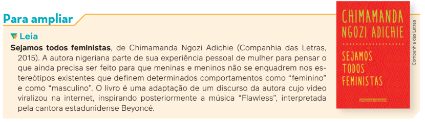
O transfeminismo
Quando falamos de feminismo nos dias de hoje, além de todas as questões levantadas, há a necessidade ainda de destacar uma quarta onda que ficou conhecida como transfeminismo. Como o próprio nome já aponta, trata-se do movimento organizado com base nas reflexões feministas e em defesa das demandas e reivindicações de pessoas transgênero, especialmente de mulheres trans e travestis. Definem-se como transgênero as pessoas que, em tempo integral, parcial ou em momentos específicos da sua vida, demonstram algum grau de desconforto ou se comportam de maneira discordante do sexo designado ao nascer, reelaborando suas identidades de gênero.
Entre suas demandas específicas, podemos citar o reconhecimento do uso de um nome social (em substituição àquele que consta em seus documentos de identificação), a retificação do registro civil, as cirurgias de transgenitalização, o uso do banheiro em acordo com a identidade autorreconhecida, a implementação de ações que combatam a discriminação no mercado de trabalho (dada a imensa dificuldade que pessoas trans têm de conseguir empregos formais) e a denúncia da violência que sofrem diariamente, com a luta pela criminalização da transfobia.
A luta das pessoas trans por reconhecimento e direitos colocou sob crítica a heteronormatividade e reforçou a oposição entre o cisgênero e o transgênero. A palavra cisgênero aponta para a identidade de gênero construída com base no sexo biológico de um determinado indivíduo, identidade considerada socialmente aceita para o sexo biológico em questão. Diz respeito, portanto, aos indivíduos não trans. O avanço dos debates sobre os transgêneros impactou os movimentos feministas de forma crítica, revelando novas camadas de opressão.
Conforme estudamos, essas opressões abrangem diversos cruzamentos envolvendo questões de gênero, de raça, de classe social e/ou de sexualidade. Como descrito por Djamila Ribeiro, a ideia de uma mulher “genérica”, “universal”, esconde essas mulheres concretas, com reivindicações e desejos específicos, cujas lutas refletem as configurações de poder presentes na sociedade. Existem outros saberes, outras culturas, outras experiências à margem dos poderes e da ideologia predominantes. Dessa forma, mulheres afrodescendentes, indígenas, quilombolas, lésbicas, bissexuais, transexuais, travestis, entre outras, batalham pelo seu espaço e colocam-se como partes fundamentais da construção de propostas de políticas públicas que envolvem seus direitos em relação à saúde, à educação, ao emprego e à liberdade sexual e afetiva.
Neste início de século XXI, também assistimos ao surgimento de um novo movimento de mulheres, intitulado por alguns como o início de uma quarta onda do feminismo. Esse novo movimento apresenta algumas características bem demarcadas, como a participação relevante e expressiva de camadas jovens das sociedades, a articulação política e a mobilização de eventos, atos e protestos nas redes sociais e a organização, entre outras ações, de manifestações autointituladas como Marcha das Vadias (SlutWalk, em inglês). Estas tiveram início em Toronto, Canadá, em 3 de abril de 2011. A primeira marcha foi convocada como protesto contra os diversos casos de abuso sexual que ocorreram em janeiro daquele ano na Universidade de Toronto, como resposta a um policial que recomendara, equivocadamente, que “as mulheres evitassem se vestir como vadias [sluts], para não serem vítimas”.
Esse primeiro protesto contra a tentativa de culpabilização das vítimas de abusos sexuais levou 3 mil pessoas às ruas de Toronto, sendo seguido por manifestações em outras cidades, como Chicago e Los Angeles (ambas nos Estados Unidos), Amsterdã (Países Baixos) e Buenos Aires (Argentina), espalhando-se também pelo Brasil.
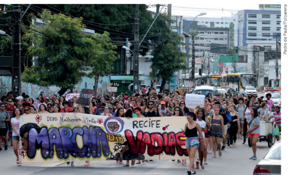
Manifestação da Marcha das
Vadias. Recife (PE), 2019.
A Marcha das Vadias ocorreu
em várias cidades brasileiras
pela primeira vez em junho
de 2011. As manifestações
contestavam principalmente
a ideia machista de que as
mulheres que são vítimas de
estupro seriam as responsáveis
por essa violência, devido a um
comportamento supostamente
inadequado.
As críticas à condição de opressão vivida pelas mulheres não podem ser generalizadas
para todos os seres humanos. Entretanto, algumas delas podem servir como base de análise
sobre a nossa sociedade. Por exemplo: o feminismo, a entrada massiva das mulheres no mercado
de trabalho e o aumento considerável do seu nível de educação formal no século XX
provocaram muitas mudanças na relação entre homens e mulheres e nas identidades de gênero.
Os movimentos feministas mobilizaram e despertaram muitos grupos de mulheres, e também
de homens, a questionar as ideias antigas de que existe uma predisposição natural – biológica
– para o exercício dos papéis sociais pelos sexos feminino e masculino. Assim, passam a
empoderar as mulheres invisibilizadas e pessoas com as mais diversas identidades de gênero
que não se enquadram nas normas socialmente reconhecidas.
Violência contra as mulheres e legislação brasileira
A violência contra a mulher é qualquer ato ou conduta baseada no gênero, tanto na esfera pública como na esfera privada, que cause dano, morte ou sofrimento físico, psicológico ou sexual à mulher. Essa violência pode ser manifestada na agressão física, na morte, no estupro, na ameaça, na publicidade e no humor machista. Também pode ser identificada em constrangimentos, humilhação, vigilância, perseguição, chantagem, calúnia, difamação e injúria. Infelizmente ainda não é possível comemorar a diminuição, e muito menos a erradicação dessas formas de violência no Brasil.
Um marco fundamental das políticas públicas de enfrentamento à violência contra as mulheres foi a criação das Delegacias de Defesa da Mulher, cuja primeira unidade foi inaugurada na cidade de São Paulo em 1985. Em 2023, após anos de mobilização de mulheres em torno da campanha “Violência não tem hora”, foi sancionado o projeto de lei que prevê o funcionamento das delegacias especializadas 24 horas por dia. Apesar desse avanço, é fundamental ampliar o número de delegacias e que elas tenham mais estrutura e atendimento de qualidade.
No plano legislativo, uma grande conquista das mulheres no Brasil foi a Lei Maria da Penha, aprovada pelo Congresso Nacional em 2006 com o objetivo de coibir a violência doméstica e familiar contra as mulheres. Essa norma, em diversos itens, garante às mulheres atendimento específico nas delegacias em caso de violência doméstica e familiar, além de providenciar investigações sobre os agressores. Também acabou com as penas pagas em cestas básicas ou multas e tornou o Estado o responsável pelo enfrentamento da violência contra a mulher. A lei possibilita, ainda, que agressores de mulheres no espaço doméstico ou familiar sejam presos em flagrante, ou tenham sua prisão preventiva decretada.
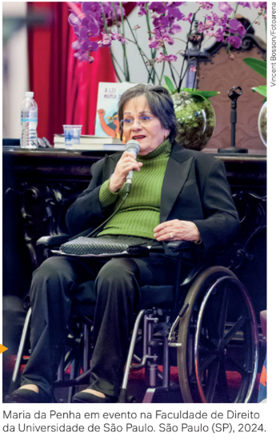
As diversas lutas desencadeadas pelo movimento feminista fizeram com que ocorressem no Brasil algumas mudanças no cotidiano das trabalhadoras brasileiras. No Rio de Janeiro, por exemplo, em 2006, foi aprovada uma lei que obriga trens e metrôs do estado a reservarem um vagão apenas para as mulheres, nos dias úteis, das 6h às 9h e das 17h às 20h. O objetivo dessa lei era reduzir os casos de assédio sexual nesses meios de transporte e que as mulheres se sentissem seguras no vagão reservado a elas. Embora importante para o movimento feminista e para garantir a mobilidade das mulheres e a sua segurança, a luta contra o assédio não se resolve apenas com os vagões para mulheres, sendo necessárias também medidas educativas, especialmente para os homens, que podem gerar mudanças mais efetivas a longo prazo.
A lei foi chamada de Maria da Penha em homenagem à
farmacêutica Maria da Penha Maia Fernandes (1945-), que,
em 1983, por duas vezes, sofreu tentativa de assassinato
por parte do seu ex-marido, ficando paraplégica por conta
das agressões. Ela se tornou uma grande ativista, símbolo
da luta das mulheres no combate à violência doméstica.
A violência contra a mulher no Brasil
Dados mais recentes divulgados pelo Fórum Brasileiro de Segurança Pública (FBSP), no 18o Anuário Brasileiro
de Segurança Pública 2024, revelaram uma queda de 3,4% no número de mortes violentas de mulheres em relação
ao ano anterior; contudo, houve um crescimento de todas as modalidades de violência contra as mulheres.
O feminicídio aumentou 0,8% em 2023, chegando a 1 467 casos registrados no país. As tentativas de feminicídio
também cresceram 7,2%, totalizando 2 797 vítimas. Além disso, as tentativas de homicídio contra mulheres aumentaram 9,2%, somando 8 372 casos.
Veja o infográfico que traça o perfil das vítimas de
feminicídio.
O anuário aponta, ainda, aumento nas taxas de registros de
agressões em contexto de violência doméstica (9,8%), ameaças (16,5%), perseguição (34,5%), violência psicológica (33,8%)
e estupro (6,5%). As taxas são calculadas com base em dados
extraídos dos boletins de ocorrência, primeiro registro oficial
nos trâmites do Estado, de acionamentos à Polícia Militar e de
Medidas Protetivas de Urgência, do Poder Judiciário. As modalidades de violência descritas atingiram o alarmante número de
1 238 208 mulheres.
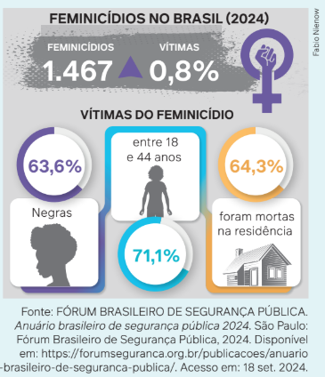
Desde a pandemia de covid-19, observou-se um crescimento em todos os tipos de violência contra mulheres e
crianças. Esse é também um dado importante, levando em consideração que 64,3% dos feminicídios acontecem
em casa e o isolamento social aumentou o tempo que as vítimas passavam com seus agressores. Nesse período,
houve, ainda, a subnotificação de violência doméstica e a redução de acesso a redes de apoio formais e informais.
Especialistas vinculadas ao FBSP, como as sociólogas Samira Bueno e Isabella Matosinhos, levantam a hipótese de que o
aumento do número de feminicídios, em um contexto de queda
nas taxas de homicídios, pode estar relacionado ao modo de
registrar a ocorrência ao longo dos anos, uma vez que a possibilidade desse registro existe somente desde 2015. De acordo
com o anuário, é esperado que os profissionais do sistema de
justiça, especialmente os policiais responsáveis pelo primeiro
registro, já estejam mais aptos a reconhecer o feminicídio e diferenciá-lo das demais formas de homicídio, o que, segundo as
pesquisadoras, deve impactar na qualidade do registro. No entanto, ao analisar esses dados por estado, notam-se ainda diferenças importantes em relação à tipificação desses
crimes como feminicídio e não como homicídio.
Como o próprio Anuário destaca, existem diversas teorias que buscam explicar os motivos da violência contra mulheres no Brasil. A antropóloga argentina Rita Segato (1951-) defende que a violência de gênero é uma manifestação de poder e controle profundamente enraizada nas estruturas patriarcais da sociedade brasileira e não deve ser analisada como um ato isolado de agressão. Há também a teoria dos ciclos de violência, elaborada pela psicóloga estadunidense Lenore Walker (1942-). Walker descreve os padrões cíclicos de comportamento em uma relação abusiva que auxiliam as mulheres a reconhecerem as fases desse ciclo de violência e a buscarem ajuda. Além disso, existe a teoria do backlash, termo em inglês que se refere à reação ou à retaliação de um grupo de pessoas a uma mudança ou a eventos recentes na sociedade. Nesse caso, o backlash se manifesta quando, à medida que as mulheres avançam em relação à promoção da igualdade de gênero em diferentes espaços, as violências contra mulheres aumentam, como uma tentativa de reverter esses progressos.
Diante do exposto, fica bastante evidente que a violência contra mulheres é uma questão urgente no país e que os programas de combate a essa violência foram e são importantes, mas muitos investimentos ainda precisam ser feitos em políticas nacionais e locais.
Com base nessas informações e na leitura do capítulo, reflita sobre o tema da violência contra as mulheres e proponha soluções para o enfretamento desse grave problema social. Em seguida, em grupos, elaborem uma apresentação na qual exponham suas propostas de resolução para as seguintes questões:
1. O que motiva a violência contra as mulheres e como lidar com essas causas?
2. Como resolver o problema de subnotificações de crimes contra as mulheres?